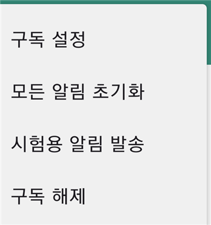
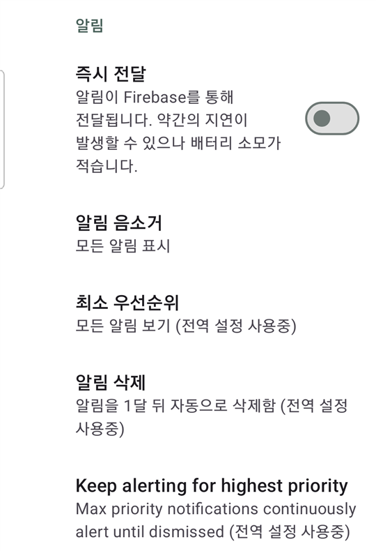

🚓 PoliceLink · 수신자 휴대폰 설정 절차
순찰차 · 통역원 · 금융기관 · 유관기관 · 병원 응급실 휴대폰 — 휴대폰 기능 · 설정 · 점검 전체 (휴대폰 1대당 약 5~10분) · 2026-11-15 작성 · 2026-11-17 개정 (웹앱 버전 18 기준)
- 전체 흐름 한눈에 보기
- 관리자: 수신자 등록 · 개인 링크 전달
- (방법 B) 관리자 PC 에서 설정 파일 받기
- 휴대폰: 기본 설정
- 휴대폰: ntfy 설치 · 배터리 허용
- 휴대폰: 개인 링크 열기 · 설정 파일 복원 · 즉시 전달 켜기
- (권장) 알람음을 사이렌으로
- 시험 (꼭 한 번)
- 알람 끄는 방법
- 매일 점검
- 주의사항 · 알아 둘 동작
- 링크 · 토픽이 유출됐을 때
- 알람이 오면 — 응답 순서
- 문제 해결 (증상별)
- 부록: 갤럭시 A90 점검 기록
⭐ 가장 중요한 4가지 — 이것만 틀려도 알람을 놓칩니다.
① ntfy 구독의 즉시 전달 켜짐 (알림창에 ntfy "알림 수신중" 이 항상 보임)
② 알람 음량 0 아님
③ 화면 잠금 방식 드래그
④ ntfy 배터리 최적화 해제
1. 전체 흐름 한눈에 보기
[관리자 PC] 수신자 등록(＋ 추가) → 개인 링크를 그 수신자에게만 전달
[수신자 휴대폰] ntfy 설치 → 배터리 허용 → 개인 링크 열기 → 📱 설정 파일 받기 → ntfy 에서 파일 복원
→ (사이렌) → 시험
| 설정 항목 | 하나씩 손으로 | 설정 파일 사용 |
|---|
| 내 알림 구독 (내 토픽) | 🔔 내 알림 구독 버튼 / 토픽 직접 입력 | ✅ 자동 |
| 계속 울리기 (긴급 요청, 누를 때까지) | 설정 → Keep alerting | ✅ 자동 |
| 즉시 전달 (지연 없음 · 꼭 켜야 함) | 구독 설정 → 즉시 전달 (구독 버튼 · 토픽 입력으로 만들면 꺼진 채로 생김) | ✅ 자동 |
| 배터리 최적화 해제 | 설정 메뉴에서 | ✋ 직접 (버튼 한 번) |
| 개인 링크 등록 (응답 화면) | 링크 열기 | ✋ 직접 (같음) |
| 사이렌 소리 · 저장공간 권한 | 직접 | ✋ 선택 (기본 소리면 생략 가능) |
안드로이드는 다른 앱이 ntfy 의 설정·권한을 대신 바꾸지 못하게 막아 두었기 때문에, ✋ 표시는 사람이 직접 눌러야 합니다.
⚠️ 수신자마다 토픽이 다릅니다. 설정 파일도 수신자마다 따로이며, 다른 사람의 파일로 복원하면 그 사람의 알림을 받게 됩니다.
(병원 수용 요청 시스템처럼 같은 지역 파일 하나를 여러 휴대폰에 쓰는 방식이 아닙니다.)
2. 관리자: 수신자 등록 · 개인 링크 전달
- PC Chrome 에서 PoliceLink 웹앱 → 관리자 아이디 · PIN 으로 로그인
- ⚙ 관리자 → 수신자 → 유형(🚓 순찰차 · 🗣️ 통역원 · 🏦 금융기관 · 🏛️ 유관기관 · 🏥 병원 응급실) 묶음에서 ＋ 추가
- 이름 · 소속 기관 · 상세(통역원은 가능 언어) 입력.
통역원 · 병원 응급실은 담당 권역(서울 4 · 경기 4 · 인천) 선택 — 비워 두면 전체 구역 담당 → 저장
- 표에 생긴 개인 링크의 링크 복사 → 그 수신자에게만 전달 (카카오톡 1:1 · 문자 · 이메일)
표의 각 줄에는 개인 링크 · ntfy 토픽 · 📱 휴대폰 설정 파일 버튼이 있습니다.
보통은 수신자가 휴대폰에서 직접 설정 파일을 받으므로(6번, 방법 A) 관리자는 링크만 전달하면 됩니다.
3. (방법 B) 관리자 PC 에서 설정 파일 받기
수신자가 휴대폰에서 파일을 받기 어려울 때만 씁니다 (관리자가 휴대폰을 직접 설정해 줄 때 등).
- 관리자 → 수신자 표에서 그 수신자 줄의 📱 휴대폰 설정 파일 클릭
- PC 다운로드 폴더에
ntfy-PoliceLink-IN-005.json 처럼 수신자 번호가 붙은 파일이 저장됩니다.
- 그 수신자의 휴대폰으로 보내기:
| 방법 | 절차 |
|---|
| 카카오톡 PC | 그 수신자와의 1:1 채팅(또는 관리자 본인 나와의 채팅)에 파일 끌어다 놓기 → 휴대폰에서 파일 누르기 → 저장 |
| 이메일 | 첨부해서 보내기 → 휴대폰에서 첨부파일 다운로드 |
| USB 케이블 | 휴대폰을 PC 에 연결 → 휴대폰 Download 폴더에 복사 |
⚠️ 파일에는 토픽 이름이 들어 있습니다. 토픽을 아는 사람은 누구나 그 수신자의 알림을 받을 수 있으니
단체방 · GitHub 등 공개된 곳에 올리지 말고, 보낸 뒤 PC 다운로드 폴더의 파일은 지우세요.
4. 휴대폰: 기본 설정
안드로이드 휴대폰 기준 (갤럭시 A90 · 안드로이드 12 에서 확인). 메뉴 이름은 기종마다 조금 다를 수 있습니다.
아이폰은 "계속 울리기"가 안 되므로 쓰지 않습니다.
| 항목 | 위치 | 설정 | 이유 |
|---|
| 인터넷 | 화면 위를 내려서 빠른 설정 | Wi-Fi 또는 데이터 항상 켜기 | 꺼져 있으면 알림이 아예 안 옴 |
| 알람 음량 | 설정 → 소리 및 진동 → 음량 → 알람 | 중간 이상 (0 안 됨) | ntfy 는 알람 음량으로 울림 |
| 무음 · 진동 | — | 상관없음 | 알람 음량으로 울리므로 소리 남 |
| 방해 금지 | 설정 → 알림 → 방해 금지 | 안 쓰거나 알람 허용 | 알람까지 막으면 안 울림 |
| 충전 | — | 가능하면 충전기에 꽂아 두기 | 즉시 전달은 배터리를 조금 더 씀 |
| 화면 잠금 방식 | 설정 → 잠금화면 → 화면 잠금 방식 | 드래그 (기종에 따라 '밀기') | 화면을 켜면 잠금화면에 알람이 크게 보임. '설정 안 함'은 잠금화면이 없어 바로 홈 화면이 열리므로 알람이 안 보임 ❌ |
| 팝업 유지 시간 | 설정 → 접근성 → (상호작용 및 손재주) → 액션 취하기 전 대기 시간 | 2분 | 화면이 켜져 있을 때 위쪽 알람 팝업이 몇 초 만에 사라지지 않고 2분 동안 남음 |
| 잠금화면 알림 | 설정 → 잠금화면 → 알림 | 켬 · 표시할 알림 모든 알림 · 알림 내용 숨기기 끔 | 잠금화면에 알람 제목이 보여야 함 (기본값 그대로) |
PIN · 패턴 잠금을 쓰면 '자동 잠금' 시간(예: 화면 꺼지고 10분) 안에는 잠금화면 없이 바로 홈 화면이 열려 알람이 안 보입니다.
병원에 나눠 주는 업무 전용 공기계(개인 정보 없음)는 드래그를 권장합니다. 개인 휴대폰이라 PIN 을 써야 하면
설정 → 잠금화면 → 보안 잠금 설정 → 자동 잠금 '화면이 꺼지면 바로' · 전원 버튼으로 바로 잠금 켬.
5. 휴대폰: ntfy 설치 · 배터리 허용
- Play 스토어에서 ntfy 설치 (무료, 회원가입 없음) → 한 번 열기 → 알림 허용을 물으면 허용
- ntfy 위쪽 배터리 최적화 안내 → 지금 수정하기 → 허용
안내가 없으면: 설정 → 애플리케이션 → ntfy → 배터리 → 제한 없음(또는 최적화하지 않음)
삼성 일부 기종: 설정 → 배터리 → 백그라운드 사용 제한 → 절전 예외 앱에 ntfy 추가
6. 휴대폰: 개인 링크 열기 · 설정 파일 복원
6-1. 개인 링크 열기 (응답 화면 등록)
- 관리자에게 받은 개인 링크를 휴대폰의 기본 브라우저(삼성 인터넷 또는 Chrome)로 엽니다.
알림을 누르면 기본 브라우저로 열립니다. 등록은 브라우저마다 따로 저장되므로 같은 브라우저여야 합니다.
- 위쪽에 내 이름 · 소속이 보이면 등록 완료. 첫 화면을 한 번 터치 (그래야 웹앱 소리가 납니다)
- 브라우저 메뉴 → 홈 화면에 추가
6-2. 설정 파일 받기 · 복원 (방법 A — 휴대폰에서 바로)
- 응답 화면 아래 📱 화면 꺼짐 알림 설정 보기를 누름 → 열린 📱 화면이 꺼져도 알림 받기 상자 → 📱 설정 파일 받기
ntfy-PoliceLink-(내 번호).json 이 휴대폰 다운로드 폴더에 저장됩니다.
(방법 B: 관리자에게 받은 파일을 다운로드 폴더에 저장)- ntfy 오른쪽 위 ⋮ → 설정 → 맨 아래 백업 및 복원 → 파일에서 복원
- 파일 선택 화면에서 다운로드 → 받은 파일 선택 (안 보이면 왼쪽 메뉴 ☰ → 다운로드 / 내 파일)
- "복원 성공" 안내 후 ntfy 첫 화면에 🗣️ PoliceLink 통역원 5 처럼 내 이름의 구독이 보이면 완료
- 알림창을 내려 ntfy "알림 수신중 · 즉시 전달 주제 n개 구독중" 알림 확인 (없으면 ntfy 를 닫았다 다시 열기)
- 웹앱으로 돌아와 닫기 (🔔 내 알림 구독 버튼은 누르지 않아도 됩니다 — 이미 구독됨)
이미 같은 토픽을 구독한 휴대폰에서는 그 토픽이 복원되지 않고 건너뜁니다.
설정 파일대로(즉시 전달 · 계속 울리기) 맞추려면 ntfy 에서 그 구독을 길게 눌러 삭제한 뒤 다시 복원하세요.
ntfy 의 다른 구독(다른 업무 알림 등)과 앱 전체 설정은 건드리지 않습니다.
⚠️ 설정 파일 대신 🔔 내 알림 구독 버튼이나 토픽 직접 입력으로 구독했다면 '즉시 전달'이 꺼져 있습니다.
이 상태에서는 알림이 구글 푸시로만 와서 늦거나 빠지고, ntfy 앱을 열어야 목록에 들어오며 알람이 울리지 않을 수 있습니다
(2026-11-17 A90 에서 실제로 겪음 — 부록). → 6-3 절차로 즉시 전달을 켜세요.
켜지면 알림창에 ntfy "알림 수신중 · 즉시 전달 주제 n개 구독중" 이 항상 떠 있습니다.
6-3. 즉시 전달 켜기 (구독 버튼 · 토픽 입력으로 구독했을 때, 또는 점검 때)
ntfy 1.25.2 · 갤럭시 A90 화면 기준 (2026-11-17 실제 화면에서 확인). 1분이면 끝납니다.
- 홈 화면에서 ntfy 앱을 엽니다. (잠금화면이면 먼저 화면을 밀어 엽니다)
- 구독한 주제 목록에서 PoliceLink 구독(
pl- 로 시작하는 줄, 또는 내 이름)을 누릅니다.
→ 받은 알림 목록 화면이 열립니다.
- 오른쪽 위 ⋮ (옵션 더보기) 를 누릅니다.
- 메뉴에서 구독 설정 을 누릅니다. (오른쪽 그림 ①)
- 알림 묶음의 첫 줄 즉시 전달 오른쪽 스위치를 눌러 켭니다. (그림 ②)
· 꺼져 있을 때 설명: "알림이 Firebase를 통해 전달됩니다. 약간의 지연이 발생할 수 있으나…"
· 켜면 스위치가 색이 바뀌고 설명이 즉시 전달 내용으로 바뀝니다.
- 배터리 최적화를 끄라는 안내가 나오면 허용 (5번과 같음).
- 같은 화면 아래 Keep alerting for highest priority 가 "Max priority notifications continuously alert until dismissed" 인지 확인 (긴급 = 계속 울림. 기본값 그대로).
- 뒤로 가기 2번 → 홈 버튼. ntfy 화면을 열어 둔 채로 두지 않습니다.
- 화면 위를 내려 알림창에 ntfy "알림 수신중"(즉시 전달 주제 1개 구독중) 알림이 생겼는지 확인 → 끝.
|
① ⋮ 메뉴

② 구독 설정 — 즉시 전달 (꺼진 상태)

|
확인 방법: ntfy 첫 화면 구독 줄에 ⚡(번개) 표시가 생기고, 알림창에 "알림 수신중" 이 항상 남아 있으면 즉시 전달이 켜진 것입니다.
"알림 수신중" 알림은 지우지 마세요(지워도 다시 생김). 안 보이면 ntfy 를 닫았다 다시 열거나 휴대폰을 다시 켭니다.
7. (권장) 알람음을 사이렌으로
설정 파일은 알림 소리를 바꾸지 못하므로, 새로 설치한 휴대폰은 기본 소리로 울립니다.
ntfy 의 계속 울리는 소리는 ntfy 알림 종류 중 "우선순위 최상"의 소리를 씁니다. 이것만 바꾸면 되고 다른 앱 소리는 그대로입니다.
7-1. 사이렌 파일 받기
휴대폰 브라우저에서 아래 주소 중 하나를 엽니다 → 다운로드 폴더에 저장됩니다.
주소 앞부분: https://github.com/bandit1397/PoliceLink-Integrated-Emergency-Support-Platform-for-Police/raw/main/docs/sounds/
| 소리 | 파일 이름 (주소 앞부분 뒤에 붙임) |
|---|
| 천천히 오르내림 (기본 크기) | siren_wail.ogg |
| 천천히 오르내림 · 작게 (50 · 30 · 20%) | siren_wail_50.ogg · siren_wail_30.ogg · siren_wail_20.ogg |
| 빠른 삐용삐용 | siren_yelp.ogg |
사무실 · 야간 근무처럼 너무 크면 작은 크기 파일을 고르세요 (알람 음량을 줄이는 것보다 안전 — 음량은 다른 알람과 같이 줄어듦).
7-2. 알림 소리 폴더로 옮기기 (소리 목록에 바로 나오게)
- 내 파일 앱 → 다운로드
- 받은
siren_wail….ogg 를 길게 누르기 → 이동
- 내장 메모리 → Notifications 폴더 → 여기로 이동
7-3. ntfy "우선순위 최상" 소리 바꾸기
- 설정 → 애플리케이션 → ntfy → 알림
- 우선순위 최상(Max priority) → 소리
- 목록에서 사이렌 선택 → 뒤로 가기 (저장됨). 목록에 없으면 ＋ / 직접 설정에서 파일을 직접 선택
우선순위 최상 항목이 없으면 아직 긴급 요청 알림을 한 번도 받지 않은 것입니다 → 8번 시험(긴급)을 한 번 한 뒤 다시 보세요.
7-4. 저장공간 권한 허용 (꼭)
- 설정 → 애플리케이션 → ntfy → 권한
- 저장공간 → 허용 (안드로이드 13 이상은 음악 및 오디오 → 허용)
⚠️ 이 권한이 없으면 사이렌이 한 번만 울리고 계속 울리지 않습니다.
그럴 땐 권한을 허용하거나 소리를 기본 알림 소리로 되돌리세요.
8. 시험 (설정 후 꼭 한 번)
- 수신자 휴대폰 화면을 끕니다 (무음 모드여도 됨)
- 관리자 · 상황관리자 · 현장 경찰관 화면(PC 등)에서 ➕ 신규 요청 → 그 수신자 유형 선택 → 긴급도 긴급
→ 요청 내용에 "시험" → 알림 대상에서 그 수신자만 체크 → 보내기
- 몇 초 안에 알람이 울리고 누를 때까지 계속 울리면 성공 (사이렌을 설정했다면 사이렌)
- 전원 버튼으로 화면을 켬 → 잠금화면 시계 아래에 알람 카드가 보이는지 (안 보이고 홈 화면이 나오면 4번 '화면 잠금 방식')
- 잠금을 풀고 알림 본문을 누름 → 관리자 화면이 아니라 내 응답 화면이 바로 열리는지 (알람은 아직 울림)
- 응답 버튼(예: 통역 가능 / 수용 불가 → 사유)을 누름 → 알람이 멈추고 ntfy 화면이 잠깐 열림 → 뒤로 가기로 응답 화면에 돌아옴 (꼭!) → 보낸 쪽 상황판에 응답이 보이는지 → 상황판에서 요청 취소
| 시험 결과 | 원인 · 조치 |
|---|
| 알림이 아예 안 옴 | ntfy 에 내 이름 구독이 있는지 (6-2) · 인터넷 (4) · "알림 수신중" 알림 · 보낼 때 이 수신자를 대상으로 골랐는지 (통역원은 언어 · 권역, 응급실은 권역이 맞아야 목록에 나옴) |
| 1~수 분 늦게 옴 · ntfy 앱을 열어야 들어오고 알람이 안 울림 | 즉시 전달 켜기 (6-3, 알림창 "알림 수신중" 확인) · 배터리 최적화 해제 (5) |
| 화면을 켜면 알람 없이 홈 화면 | 화면 잠금 방식이 '설정 안 함'이거나, PIN 의 자동 잠금 시간 안 → 드래그로 (4번) |
| 위쪽 팝업이 몇 초 만에 사라짐 | 정상 (알림창 · 잠금화면에는 남음). 더 오래 보려면 접근성 → 액션 취하기 전 대기 시간 2분 (4번) |
| 소리 없음 · 한 번만 울림 | 알람 음량 (4) · 구독 설정의 계속 울리기 · 사이렌이면 저장공간 권한 (7-4) |
| 알림을 누르니 관리자 화면 · '개인 링크를 여세요' | 다른 브라우저로 열림 → 그 브라우저에서 개인 링크를 한 번 다시 열기 (6-1) |
| 복원했는데 구독이 안 생김 | 같은 토픽이 이미 있음 → 구독 삭제 후 다시 복원 (6-2) |
| "복원 실패" | 내 번호의 .json 파일이 맞는지, 전송 중 이름 · 내용이 바뀌지 않았는지 |
9. 🔕 알람 끄는 방법
| 방법 | 소리 |
|---|
| 알림 본문 누르기 | ❌ 아직 울림 — 응답 화면이 열림 → 응답 버튼을 누르면 멈춤 |
| 알림의 알람 끄기 버튼 | ✅ 멈춤 (ntfy 화면이 열림, 응답은 안 됨) |
| ntfy 앱 → 내 구독 누르기 | ✅ 멈춤 |
| 웹앱 응답 화면의 빨간 응답 대기 배너 | ❌ 휴대폰 알람은 계속 — 웹 화면 소리만 끄고 응답 버튼으로 이동 (2026-11-18 변경) |
| 웹앱의 응답 버튼 (가능 / 불가 · 사유) | ✅ 응답과 함께 멈춤 (ntfy 화면 잠깐 열림 → 뒤로 가기) |
| 알림을 옆으로 밀어 지우기 | △ ntfy 프로그램상 멈추게 되어 있으나 이 기종에서 아직 시험 전 |
| 그래도 안 멈출 때 | 설정 → 애플리케이션 → ntfy → 강제 중지 → ntfy 다시 열기 (안 열면 다음 알림을 못 받음) |
ntfy 화면을 열어 둔 채로 휴대폰을 잠그지 마세요. 그 화면이 열려 있는 동안 그 토픽 알림은 알림창에 뜨지 않고,
다음 알람이 오면 잠금을 풀 때 알림만 지워지고 알람은 계속 울립니다. 확인 후에는 홈 버튼으로 나오세요.
10. ✅ 매일 점검 (근무 시작 때 10초)
휴대폰 충전 중 · Wi-Fi(또는 데이터) 켜짐
알림창에 ntfy "알림 수신중" 알림이 있음 ("Waiting for network" 이면 인터넷 끊김)
알람 음량이 0 이 아님
화면 잠금 방식이 드래그 (화면을 켜면 잠금화면이 나옴)
ntfy 화면이 맨 앞에 열려 있지 않음 (홈 화면이나 PoliceLink 응답 화면으로 두기)
11. 주의사항 · 알아 둘 동작
- 새 요청은 긴급 · 보통 모두 응답할 때까지 계속 울립니다 (2026-11-18 변경). 알림창에서는 새 요청이 맨 위에 옵니다. 긴급은 제목의 [긴급] · 🚨 로 구분합니다.
- 응답하지 않으면 1분마다 최대 3번 다시 알립니다 ("[재알림 1/3]"). 관리자 · 상황관리자 상황판이 열린 PC 가 한 대 이상 있어야 재알림이 나갑니다 (창을 최소화해도 됨, 그때는 1~2분 간격).
- 화면이 켜져 있을 때 위쪽에 뜨는 알람 팝업은 안드로이드가 몇 초 뒤 알림창으로 넣습니다 (접근성 설정으로 최대 2분). 알림창 · 잠금화면에는 계속 남습니다.
- PoliceLink 응답 화면이 앞에 열려 있으면 웹 화면도 응답할 때까지 "뚜뚜뚜" 소리 · 진동을 냅니다 (처음 한 번 화면 터치 필요). 화면이 뒤로 가면 웹 소리는 멈추고 ntfy 알람이 맡습니다.
- 한 휴대폰에 수신자 여러 개(예: 응급실 + 통역원)를 등록할 수 있습니다 — 각 개인 링크를 같은 브라우저로 한 번씩 열기. 위쪽 전환 버튼으로 바꿈.
- ntfy.sh 무료 서버는 보내는 쪽 인터넷 주소(IP) 당 하루 약 250건 한도가 있습니다. 시험 요청이 쌓이면 상황판에서 요청 취소로 정리하세요.
- 휴대폰 알림창에는 최근 요청 3건의 알림만 남고, 오래된 것은 자동으로 지워집니다. 지워진 요청도 PoliceLink 응답 화면에는 그대로 있습니다.
- 알림에는 요청번호 · 유형 · 긴급도만 담깁니다. 내용은 PoliceLink 화면에서 봅니다.
- 개인 링크 · 토픽 · 설정 파일은 그 수신자 본인만 갖습니다. 공개된 곳에 올리지 않습니다.
- ntfy.sh 공용 무료 서버에 의존합니다. 서버 장애 시 화면 꺼짐 알림이 멈출 수 있는 시험 운영용입니다.
- 실제 사건 정보 · 개인정보(이름, 주민등록번호 등)는 입력하지 마세요. 실제 업무 적용 전 소속 기관의 승인과 개인정보 보호 검토가 필요합니다.
- 설정 파일 방식은 ntfy 1.25.2 형식으로 만들었지만 PoliceLink 수신자 휴대폰에서는 아직 시험 전입니다. 첫 휴대폰에서 8번 시험을 꼭 해 주세요.
12. 링크 · 토픽이 유출됐을 때
| 유출된 것 | 조치 (관리자 → 수신자) | 휴대폰에서 할 일 |
|---|
| 개인 링크만 | 그 수신자 수정 → 링크 재발급 (이전 링크 즉시 무효). 토픽은 그대로 | 새 링크를 같은 브라우저로 한 번 열기 (ntfy 는 그대로) |
| 토픽 · 설정 파일 | 그 수신자 삭제 → ＋ 추가로 다시 등록 (새 번호 · 새 링크 · 새 토픽). 지난 기록은 옛 번호로 남음 | ntfy 에서 옛 구독 길게 눌러 삭제 → 새 링크 열기 → 새 설정 파일 복원 (6) → 시험 (8) |
옛 설정 파일(.json)을 PC · 휴대폰 · 채팅방에서 모두 지웠다
새 링크 · 토픽을 공개된 곳에 적지 않았다
13. 🚨 알람이 오면 — 응답 순서
① 알람 (긴급 = 응답할 때까지 계속 울림, 화면이 꺼져 있어도 · 무음 모드여도)
② 전원 버튼 → 잠금화면 시계 아래 "🚨 [긴급] 병원 응급실 요청" 카드
③ 카드 누름 → 화면 밀기(드래그) → PoliceLink 응답 화면이 바로 열림 ※ 알람은 아직 울림
④ 응답 버튼 (수용 가능 / 수용 불가 → 사유) → 응답 전송 + 알람 멈춤
⑤ ntfy 화면이 잠깐 열림 → [뒤로 가기] → 응답 화면으로 돌아옴 (배정 · 이송 결정을 기다림)
⚠ ⑤의 뒤로 가기를 빼먹으면 다음 알림이 알림창에 뜨지 않음 (자동으로 돌아오지 않음)
| 상황 | 하는 일 |
|---|
| 응답 없이 알람만 끄기 | 알림의 알람 끄기 버튼 (ntfy 화면이 열림 → 홈 버튼). 응답은 나중에 PoliceLink 에서 |
| 병원 '수용 불가' | 버튼을 누르면 사유 버튼이 펼쳐짐 → 사유를 골라 누를 때 응답 전송 · 알람 멈춤 |
| 이송 결정(배정) 알림 | "이송 확정" 알림 → 응답 화면에서 환자 도착 → 인계 완료 |
| 응답 후 ntfy 화면 | 꼭 뒤로 가기(또는 홈)로 나오기. ntfy 화면을 열어 두면 다음 알림이 알림창에 뜨지 않습니다. 응답 화면이 열린 채 휴대폰을 두어도 됨 |
| 화면 꺼짐 알림 설정 안내 | 응답 화면에는 처음엔 숨겨져 있음 → 화면 아래 📱 화면 꺼짐 알림 설정 보기 로 열고 닫기 로 닫음 |
ntfy 의 계속 울리는 알람은 ntfy 화면이 열릴 때(또는 알림을 지울 때)만 멈추도록 ntfy 앱이 만들어져 있습니다.
그래서 응답 버튼을 누르면 PoliceLink 가 ntfy 화면을 잠깐 열어 알람을 끄고, 사용자는 뒤로 가기로 돌아옵니다. 자동으로 PoliceLink 로 돌아오게 할 수는 없습니다 (ntfy 앱 소스 확인, 2026-11-18).
ntfy 화면이 열려 있는 동안에는 ntfy 가 그 토픽 알림을 알림창에 띄우지 않으므로 뒤로 가기를 꼭 누릅니다. (PoliceLink 쪽에서 바꿀 수 없는 부분)
14. 🛠 문제 해결 (증상별)
| 증상 | 원인 | 조치 |
|---|
| 알림이 아예 안 옴 | 구독 없음 · 인터넷 끊김 · 대상(언어 · 권역)에 안 들어감 | 6-2 · 4 · 보내는 화면의 대상 목록 확인 |
| ntfy 앱을 열어야 알림이 들어오고 알람이 안 울림 | 즉시 전달 꺼짐 (구글 푸시만 사용 → 늦거나 빠짐) | 구독 설정 → 즉시 전달 켬 (6-3) |
| 화면을 켜면 알람 없이 홈 화면 | 화면 잠금 '설정 안 함', 또는 PIN + 자동 잠금 시간 안 | 화면 잠금 드래그 (4) |
| 위쪽 팝업이 몇 초 만에 사라짐 | 안드로이드 기본 동작 | 접근성 → 액션 취하기 전 대기 시간 2분 (4) |
| 소리 없음 · 한 번만 울림 | 알람 음량 0 · 계속 울리기 꺼짐 · 사이렌 저장공간 권한 | 4 · 6-2 · 7-4 |
| 응답했는데 휴대폰에서 "뚜뚜뚜" 가 계속 | PoliceLink 웹 화면 소리 (버전 16 이전 문제) | 응답 화면 새로 고침 · 브라우저 탭 닫았다 다시 열기 |
| 재알림이 늦게 옴 · 안 옴 | 상황판(관리자 · 상황관리자)이 열린 PC 가 없음 | 관제 PC 에서 상황판 켜 두기 |
| 알림을 누르니 관리자 화면 · '개인 링크를 여세요' | 그 브라우저에 수신자 등록 없음 · 다른 브라우저로 열림 | 같은 브라우저로 개인 링크 한 번 열기 (6-1) |
| ntfy 화면을 열어 둔 채 알람이 안 뜸 | 보고 있는 토픽의 알림은 ntfy 가 알림창에 띄우지 않음 | 확인 후 홈 버튼으로 나오기 |
| 알람이 안 멈춤 | — | 알람 끄기 버튼 / ntfy 앱 열기 → 그래도 안 되면 ntfy 강제 중지 후 다시 열기 (9) |
15. 부록: 갤럭시 A90 점검 기록 (2026-11-17, 시험 휴대폰)
SM-A908N · 안드로이드 12 · ntfy 1.25.2. PC 에 USB 로 연결해 설정 값을 읽고 시험 알람을 보내 확인한 결과입니다.
| 항목 | 확인 값 | 결과 · 메모 |
|---|
| 잠금화면 알림 | 켬 · 모든 알림 · 내용 표시 | ✅ 그대로 두면 됨 |
| ntfy '우선순위 최상' 알림 | 중요도 높음 · 잠금화면 표시 | ✅ |
| Always On Display | 켬 · 새 알림 표시 | ✅ 꺼진 화면에 ntfy 아이콘 |
| 방해 금지 | 꺼짐 | ✅ |
| 알람 음량 | 4 (스피커) | ✅ 울림 확인. 너무 작으면 올리기 |
| 액션 취하기 전 대기 시간 | 2분 | ✅ 사용자가 설정 |
| 화면 잠금 방식 | PIN + 자동 잠금 10분 → 드래그 | ❌→✅ PIN 일 때는 10분 안에 화면을 켜면 잠금화면 없이 홈으로 가서 알람이 안 보였음. 드래그로 바꾼 뒤 시험 알람이 잠금화면에 크게 보임 확인.
삼성 이 기종은 '밀기'를 '드래그'(보안기능 없음)로 표시. 잠금화면 '알림 표시할 앱'(앱별 선택) 메뉴는 없음 |
| ntfy 구독 | 병원 응급실 1개 (구독 버튼으로 추가) | ❌ 즉시 전달 꺼짐 → 14:17~14:19 긴급 요청 3건이 실시간으로 안 오고 ntfy 앱을 열 때 들어옴, 알람 없음.
구글 푸시로 온 재알림(14:22)은 울림. → 14:48 사용자가 6-3 절차로 즉시 전달 켬 ✅
→ 화면 꺼짐 상태 긴급 시험 알람이 1.4초 만에 즉시 전달로 도착 · 알람 울림 확인 |
| 알림 → 응답 화면 | 알림 누르면 PoliceLink 응답 화면 | ✅ (버전 14 부터) |
병원에 나눠 주는 공기계는 4번 표 전체 + 설정 파일 복원(즉시 전달 자동) + 8번 시험을 한 대씩 꼭 하세요.
공기계에는 개인 정보가 없으므로 화면 잠금 '드래그' 를 써도 됩니다.